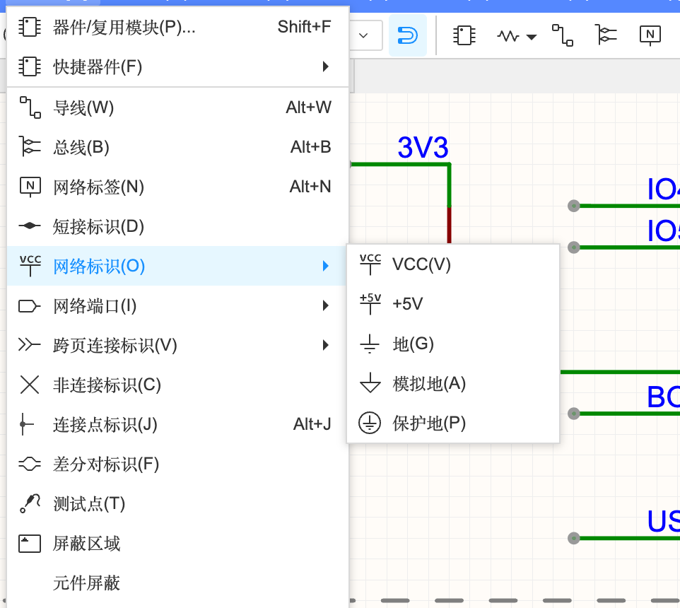
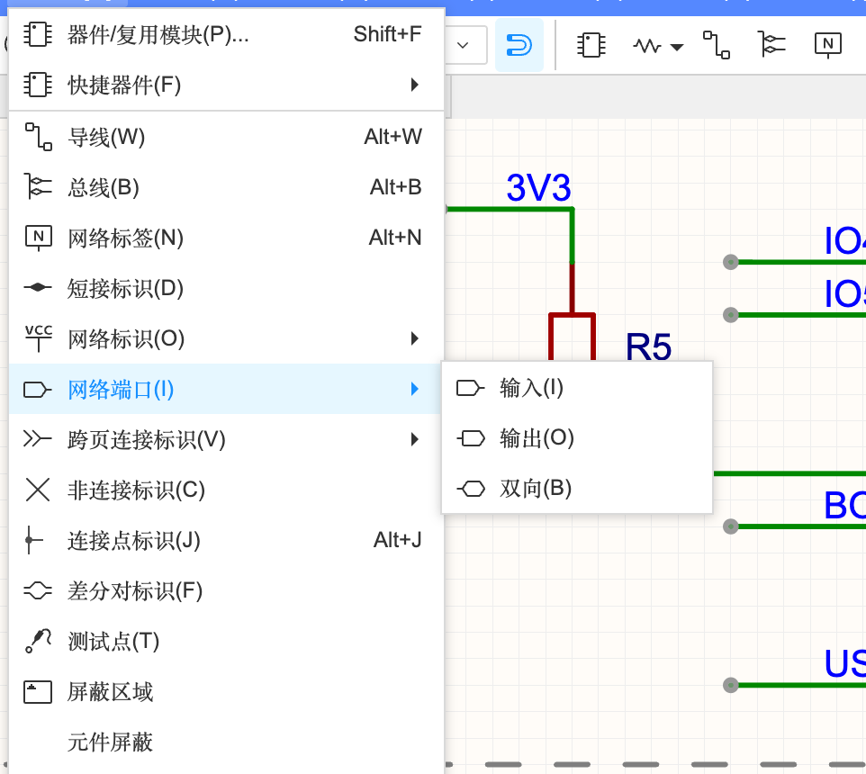
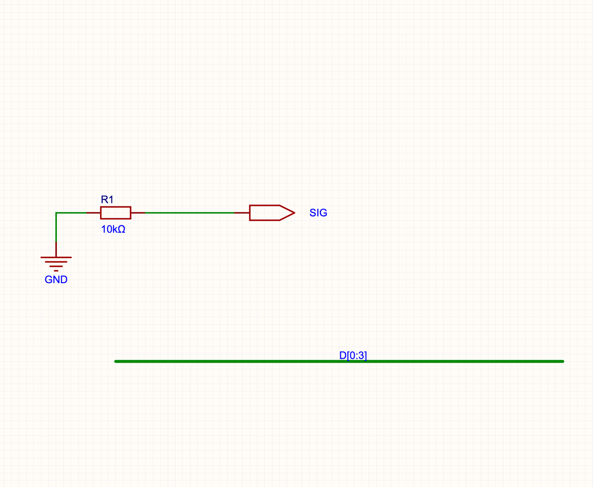
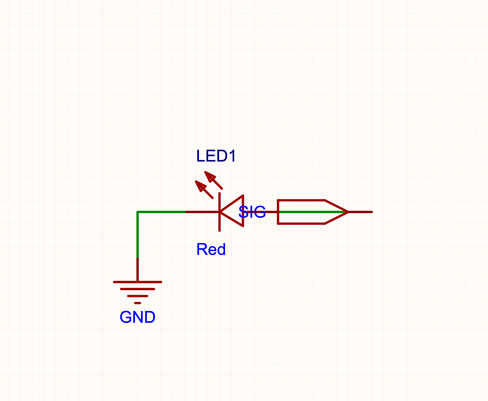
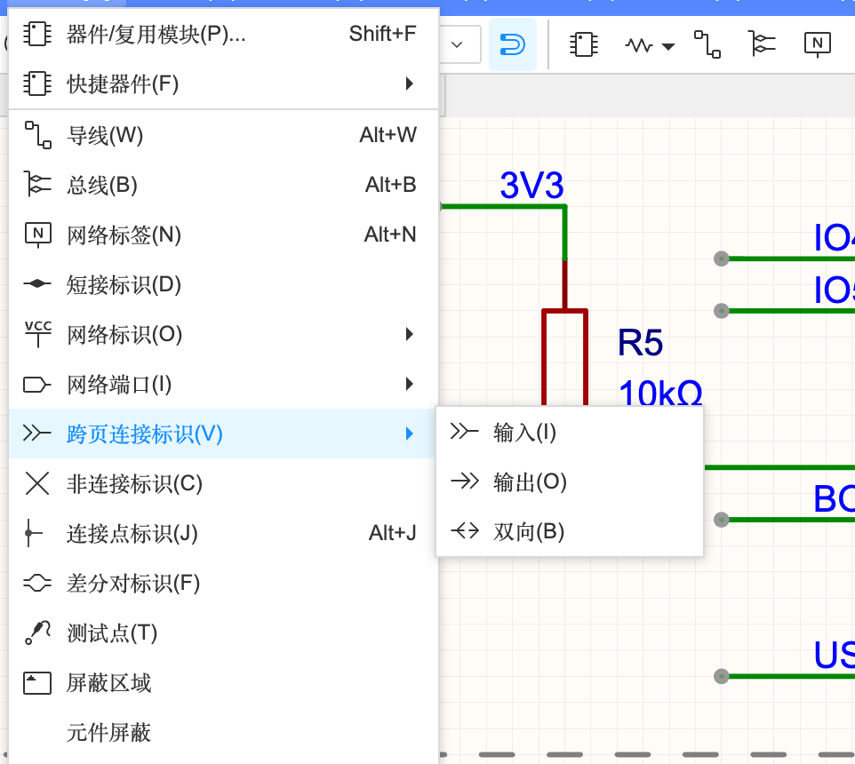

4.2 连接关系
原理图的核心就是“谁和谁连在一起”。除了导线，还有 8 种以上的“连接方式”，它们的区别在于：连得多远（本页 / 跨页 / 全局）、用在什么场景。这一页用一个互动图把它们讲清楚，再一一说明怎么放。
先玩一下：8 种连接方式对比#
每种连接怎么放#

导线 ⌥W 与连接点 ⌥J#
最基本的连接（A-2 用过）。单击起点、在拐弯处单击、在终点单击，Esc 结束；画的过程中按空格切换拐弯方向。
- 导线端点落在另一根导线中间时，会自动出现红色连接点（实心圆点），表示“这里相连”。
- 两根线只是交叉、没有圆点 = 不相连。确实要连而没自动出现圆点时，用「连接点标识」⌥J 手动加。
网络标签 ⌥N#
给一根导线起名字。名字相同的导线自动连在一起，不用拉长长的线。案例 B 的 USB_D+、RGB_DIN 就是这样连的（B-2）。网络标签必须放在导线上才有效。
网络标识（电源和地）#

就是 VCC、GND 这些电源/地符号。它们是“全局”的：整个原理图里所有同名的网络标识都连在一起，不管在哪一页。顶部工具栏有 VCC 和地的快捷按钮（A-2 用过）。放好后可以在属性里把名字改成 3V3、VBUS 等。
网络端口（输入 / 输出 / 双向）#

网络端口是给多页原理图和层次图用的“出入口”：P1 上放一个叫 SIG 的输出端口，P2 上放一个叫 SIG 的输入端口，两页的 SIG 就连通了。输入、输出、双向只是箭头方向不同，表示信号流向、方便阅读，连接关系看的是名字。
本教程在练习工程里实测：


导出网表检查：SIG = [R1.2, LED1.A]，GND = [R1.1, LED1.K]——两张图页上的元件确实连上了。在层次图里，子图的网络端口还会变成模块符号的引脚（4.4）。
跨页连接标识#

作用和网络端口类似，专门用来表示“这根线连到别的图页去了”，图上的形状提醒读图的人“去别页找”。名字相同的跨页连接标识相连。
总线 ⌥B#
当有一组相关的信号（比如数据线 D0、D1、D2、D3）要一起走时，画 8 根平行线太乱，就画一条粗的总线，名字写成 D[0:3]，表示 D0～D3 这 4 根线。每根信号从总线上“分支”出来时，分支导线要起对应的名字（D0、D1…）才能连对。设计规则里有一条“总线名需要符合规则…如 BUS[0:5]”（4.5）。新手的小板子一般用不到。
短接标识#
把两个不同名字的网络在某一点短接在一起（比如模拟地 AGND 和数字地 GND 在一点相连）。普通情况用不到。
非连接标识（×）#
告诉软件“这只引脚我故意不接”，DRC 就不会报“引脚悬空”警告。案例 B 里 USB 的 SBU1/SBU2、模组的 NC 脚都打了 ×（B-2）。
差分对标识#
在原理图里标记两根线是一对差分信号（如 USB 的 D+ / D-），PCB 里会自动识别成差分对。也可以像案例 B 那样在 PCB 的差分对管理器里设置（B-3）。
工程设置里的连接规则#
「设计」→「工程设置…」里有三个开关决定“同名的东西在不同页之间连不连”（3.2 有截图）：
| 选项 | 含义 |
|---|---|
| 网络标识跨层连接 | 同名网络标识（VCC、GND 等）在层次图的不同层级之间是否连通 |
| 网络标签跨页连接 | 同名网络标签在不同图页之间是否连通。关掉时，网络标签只在本页有效，跨页要用网络端口 / 跨页连接标识 |
| 总线生成网络类 | 画总线时自动把成员建成网络类（PCB 里可以统一设线宽） |
| 导线多网络 | 一根导线能不能挂多个网络名（允许=灵活；禁止=严谨，名字冲突会报错） |